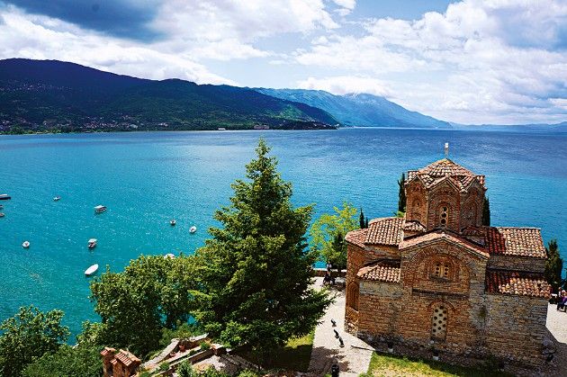

Јас сум Елена, ова е мојата персонална страна. За повеќе информации поврзани со мене, кликнете на линковите во менито погоре. За да се вратите назад кај менито кликнете на насловот.
Здраво, јас сум Елена Николовска, имам 20 години и родена сум во Скопје. Моментално сум студент на компјутерско инженерство на Факултетот за информатички науки и компјутерско инженерство во Скопје. Моето слободно време сакам да го поминувам во читање книги, патување и во дружење со пријателите. Желбата да разберам како функционираат компјутерите се појави на седум годишна возраст уште од првиот момент кога почнав моето слободно време да го поминувам играјќи компјутерски игри. Таа желба потајно растеше во мене во текот на наредните години и кога дојде моментот да ја изберам мојата професија, студирањето компјутерско инженерство беше првиот избор. Се надевам дека во претстојните години на моето студирање ќе научам многу работи во областа на технологијата и ќе се стекнам со вештини за создавање на иновативни решенија кои ќе имаат позитивно влијание врз животите на луѓето. Кога не учам, моето слободно време го поминувам читајќи книги. Сакам секакви жанрови на книги иако најмногу ги преферирам трилерите. Читањето ми помага да научам за различни култури и да размислувам за работите на нови начини. Тоа е одличен начин за опуштање и проширување на знаењата. Покрај читањето, уживам и во патувањето. Истражувањето нови места е нешто што навистина го сакам. Забавно е да се посетуваат нови дестинации и да се дознае историјата која стои позади нив. Секоја дестинација е уникатна сама за себе и тоа е главната причина поради која сакам да патувам. Патувањето исто така ги проширува погледите и разбирањето на светот.
Светот е книга и оние кои не патуваат читаат само една страница.
Патувањето е едно од највозбудливите работи кои може да ги направи човекот. Тоа отвара нови перспективи и погледи кон животот. Истражувањето на нови места и доживувањето на различни култури го исполнуваат секого со возбуда и среќа. Возбудата која ја доживувам од откривањето на нови пејзажи, испробувањето на локалната храна и запознавањето со нови луѓе е клучната причина поради која уживам во патувањето и секогаш сум подготвена за нови авантури. Свети Јован Богослов Канео или како го нарекуваат “храмот на врвот на ридот“ е дестинација која ја имам посетено неколку пати за време на моите патувања и која чува посебно место во моето срце, па поради тоа би сакала да дадам краток опис за оваа природна убавина.
На југозападниот дел од ридот, веднаш над Охридското Езеро се наоѓа една од најпознатите цркви во градот Охрид, црквата свети Јован Богослов-Канео. Оваа црква е една од најубавите средновековни споменици од каде се протега една чудесна глетка на целото Охридско Езеро. На ова место во минатото се наоѓала рибарската населба Канео, според чие име подоцна станува позната и црквата. Црквата е градена и сликана кој крајот на 13 век, меѓутоа градителот на црквата и оние што ги нацртале фреско-живописот во нејзината внатрешност не се познати. Познато е дека најстариот фреско-живопис во црквата датира од 1290 година. Во олтарот на црквата е насликан и свети Климент Охридски. Свети Климент Охридски е првиот словенски учител и просветител на христијанското учење. Помеѓу насликаните и всушност подобро зачуваните композиции во црквата е и ликот на свети Јован Богослов, патронот на црквата, кој е претставен во целост. Во периодот до доаѓањето на Турците на овие простори, во црквата „Свети Јован Богослов“ постоел развиен духовен живот, но во следните векови тој постепено опаѓа. Секој кој еднаш влегол во црквата или, пак подзастанал и седнал на платформата на најубавата градска локација и оттука го гледал езерото, хоризонтот или пак заоѓањето на сонцето, ја почувстувал смиреноста и спокој кој го доаѓаат заедно со ова место, повторно и повторно му се враќа на Канео. Според мене оваа црква го има еден од најубавите погледи во градот Охрид, особено доколку се посетува пред зајдисонце и секој кој го посетува градот Охрид, му ја препорачувам да ја посети оваа дестинација која не смее да ја измине.
Читателот живее илјада животи пред да умре . . . Човекот кој никогаш не чита живее само еден.Џорџ Р.Р. Мартин
Читањето книги отсекогаш ми било повеќе од само хоби, тоа е прекрасно бегство во различни светови, каде се впуштам во најразлични авантури заедно со главните ликови. Меѓу различните жанрови на книги, трилерите имаат посебно место во моето срце, поради напнатото исечување, забрзувањето на пулсот и неизвесноста што ја носат трилерите кои едноставно не можам да престанам да ги читам се до последната страница.Сега дозволете ми да ги споделам моите три омилени трилери кои го задржаа моето внимание уште од првата страница и ме натераа да погодувам се до самиот крај
Бизарен инцидент во руралниот Вајоминг ја натера канцеларијата на шерифот да приведе маж за двојно убиство, но дополнителните истраги укажуваат на многу пострашно откритие: сериски убиец кој киднапирал, мачел и распарчувал жртви низ целата земја во период од најмалку 25 години. Дали може да му се верува на осомничениот кога тој тврди дека е пион во една голема мрежа од лаги и измами? Откако осомничениот ќе изјави дека нема да зборува со никој друг освен со детективот од оделот за ултра насилни убиства кој истовремено е и поранешен психолог за криминално однесување, ФБИ се приморани да го повикаат детективот Роберт Хантер како помошник во истрагата. За време на интервјуата Роберт почнува да открива мрачни тајни и невидени злосторства кои останале скриени и за кои ФБИ немале поим се досега.
ПРЕД ЕДНА ГОДИНА: Тил Беркхоф како и секој татко си го сака својот син Макс со цело срце. Но и покрај тоа што го чува како сопствените очи и го предупредува од опасностите кои можат да се случат, Макс еден ден тргнува сам да ја посети својата другарка и не се враќа дома. СЕГА: Макс Беркхоф е исчезнат веќе цела година. Само киднаперот знае што се случило со него но тој во моментот е во психијатриското крило на затвор со максимално обезбедување и одбива да зборува за киднапирањето. Па таткото на се одлучува да влезе во психијатриското крило на затворот како пациент на тајна мисија. Планот е јасен: нема потреба од насилство, тој сака само признание, последна шанса да си го пронајде синот. Но како и во секоја книга на Фицек, ништо не е така како што изгледа…
Седум дена по киднапирањето, телото на дваесетгодишната дадилка се појавува во близина на меѓународниот аеродром во Лос Анџелес. По извршената обукција се открива дека таа била измачувана и на крај убиена на најбизарен можен начин. Случајот го превземаат едни од најспособните детективи во оделот за ултра насилни злосторства, Роберт Хантер и неговиот партнер Карлос Гарсија. Брзо по превземањето на случајот, дектективите сфаќаат дека си имаат работа со предатор, сериски убиец кој не остава никакви форензички докази, ги извршува своите ужасни злосторства а потоа изчезнува. Дали дектективите ќе го пронајдат и запрат овој монструм или тој и понатаму ќе продолжи со своите изопачени убиства? Крис Картер е неверојатен писател, и I am death е фантастичен трилер со многу уникатен сериски убиец кој ќе ве остави во неизвесност се до самиот крај.